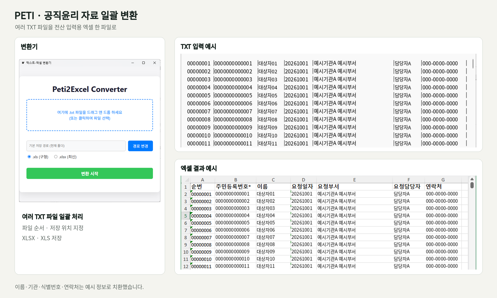

다수 TXT 파일 통합
파일 선택창이나 드래그로 여러 TXT를 추가합니다. 목록에서 파일을 빼거나 순서를 바꾼 뒤 한 엑셀 파일로 합칩니다.
PETI / FILE CONVERSION
공직윤리시스템에서 내려받은 여러 TXT 파일을
전산 입력용 엑셀 한 파일로 합칩니다.
파일마다 문자 인코딩과 열을 수작업으로 정리하는 작업을 줄이기 위해 만든 Windows 도구입니다.
TXT의 구분자를 읽어 순번·식별번호·이름·요청일자·부서·담당자·연락처를 엑셀의 7개 열로 저장합니다.

파일 선택창이나 드래그로 여러 TXT를 추가합니다. 목록에서 파일을 빼거나 순서를 바꾼 뒤 한 엑셀 파일로 합칩니다.
EUC-KR로 저장된 문자를 읽고 | 구분자로 값을 나눕니다. 각 행의 항목을 정해진 7개 열에 넣습니다.
값을 문자열 서식으로 저장합니다. 순번과 식별번호를 숫자로 바꾸면서 앞자리 0이 사라지는 문제를 방지합니다.
XLSX는 Excelize로 만듭니다. 구형 XLS가 필요하면 설치된 Microsoft Excel의 COM 기능을 호출해 변환합니다.
| 구분변환한 엑셀은 전산 입력용 파일로 사용합니다. XLS 저장에는 Microsoft Excel 설치가 필요합니다.